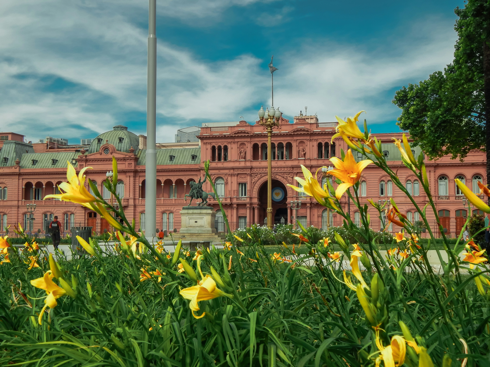
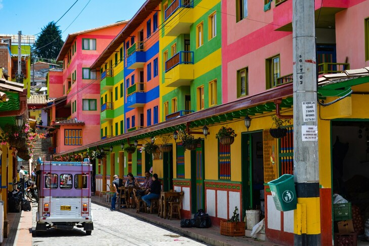
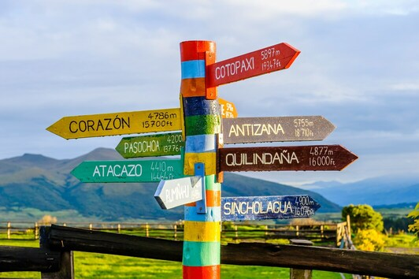

Les différences linguistiques
Bien que l'espagnol soit la langue dominante en Amérique du Sud, la région présente une diversité linguistique remarquable. Chaque pays, chaque région et même chaque communauté a son propre accent, ses expressions distinctes et ses nuances linguistiques. L'espagnol sud-américain est bien plus qu'une simple langue ; c'est un kaléidoscope linguistique où les différences régionales enrichissent la communication et révèlent la complexité culturelle de la région.
Dans cet article, nous vous proposons une exploration des variations de l'espagnol en Amérique du Sud. Nous vous donnerons quelques mots, expressions et même des expressions vulgaires afin de vous aider à mieux appréhender la langue et à vous débrouiller dans différentes situations. Considérez-le comme un petit dictionnaire pratique pour naviguer à travers les subtilités linguistiques de cette région diversifiée.
D'un pays à l'autre, les variations de l'espagnol sont perceptibles tant au niveau de l'accent que du vocabulaire et des expressions idiomatiques. Les différences peuvent être subtiles ou frappantes, mais elles témoignent toutes de l'histoire, de la géographie et des influences culturelles propres à chaque lieu. Parler l'espagnol en Amérique du Sud, c'est plonger dans une aventure linguistique où chaque conversation offre une nouvelle perspective sur la richesse et la diversité de la région.


Comment parle-t-on en Argentine ?
Le rioplatense
Comme dans d'autres parties de l'Amérique latine, l'espagnol rioplatense ne fait pas de distinction entre le son Z et le son S, contrairement à l'espagnol castillan (ou espagnol péninsulaire) qui le fait. Ainsi, les mots casar (pour "se marier") et cazar (pour "chasser") sont prononcés de la même manière par les Argentins : /kasaɾ/. De même, ves (pour "tu vois") et vez (pour "fois") deviennent des homophones.
Définition : L'accent argentin, connu sous le nom d'espagnol rioplatense, désigne les particularités linguistiques de la variante de l'espagnol parlée dans la région du Río de la Plata, principalement en Argentine et en Uruguay.
Une autre caractéristique de l'espagnol rioplatense est l'utilisation du sheísmo, qui consiste à prononcer le Y et le LL double comme des SH, contrairement à l'usage standard où ils sont prononcés comme des Y, appelé le yeísmo. Ainsi, une phrase comme « yo me llamo Carlos » (« je m’appelle Carlos ») est prononcée comme « sho me shamo Carlos ».
Il existe également le zheísmo, où le Y et le LL sont prononcés comme des J français : « jo me jamo Carlos », mais actuellement, le sheísmo est plus courant en Argentine. Le sheísmo est sans doute l'une des caractéristiques les plus distinctives de l'espagnol rioplatense, bien que son utilisation puisse varier d'une région à l'autre.
On peut également noter que les S situés en fin de syllabe ou avant une consonne sont souvent prononcés avec une aspiration. Ils sont à peine audibles, ou réalisés comme des H : par exemple, « estamos acostumbrados » (« nous sommes habitués ») devient « ehtamos acohtumbrado’ », et « basta » devient « bahta », et ainsi de suite. Cette aspiration du S est souvent remarquée dans des chansons en espagnol, elle est assez courante. Cette prononciation du S est parfois associée à un parler plus rural ou moins instruit.
Enfin, l'accent de l'espagnol rioplatense est surtout reconnaissable grâce à son intonation particulièrement mélodieuse. On pense qu'elle provient d'une influence de l'accent italien et d'autres langues comme le gallego ou le portugais. Selon une étude du CONICET1, l'intonation rioplatense serait plus précisément dérivée de l'accent napolitain. En effet, l'Argentine a connu de grandes vagues migratoires depuis l'Europe au XIXe et au XXe siècle, dont une part importante en provenance d'Italie. Ces migrations et les contacts linguistiques ont entraîné des changements dans la langue, tant au niveau de sa prononciation que de son vocabulaire.
Les mots argentins
L'immigration a enrichi le lexique de l'espagnol rioplatense avec de nombreux mots. Les italienismes sont courants : par exemple, un pibe (un garçon) vient de l'italien un pivetto, una birra (une bière) de una birra, el laburo (le travail) de il lavoro, la pancha (le ventre) de la pancia, etc. En plus du vocabulaire, les Argentins ont adopté des gestes et même des objets comme le bidet, d'origine italienne.
De nombreux mots diffèrent de l'espagnol d'Amérique latine : par exemple, le bus est appelé el colectivo, les fraises sont des frutillas, le jus de fruit est du jugo, le t-shirt est une remera, et si on a la flemme, on a la flojera plutôt que la pereza.
Ainsi, l'espagnol rioplatense a son propre lexique et expressions idiomatiques, comme "me chupa un huevo" (littéralement, "un œuf me suce") pour signifier qu'on s'en fiche. Les Argentins utilisent également le mot "re" pour intensifier un adjectif ou un nom, comme dans "para vos es re fácil" (pour toi c’est très facile). Ils préfèrent dire "dale" pour ok, utilisent "che" pour appeler quelqu'un, et "acá" et "allá" pour dire ici et là-bas, plutôt que les formes "aquí" et "ahí" utilisées en Espagne.
Pour ceux qui veulent en savoir plus sur ces expressions, il existe un livret en anglais intitulé "Che boludo" expliquant les mots et expressions typiquement argentins pour les voyageurs. Vous pouvez le consulter en PDF ici.
Les distinctions de l'adresse : utilisation de tu ou vous ?
En espagnol, la forme traditionnelle pour "tu" est normalement tú. Cependant, dans la variante linguistique spécifique de l'espagnol rioplatense, principalement utilisée en Argentine et en Uruguay, la forme utilisée est vos. À noter qu'en tant que pronom objet, la forme reste inchangée avec te. Ainsi, par exemple, "te veo" signifie "je te vois", tandis que "es para vos" équivaut à "c'est pour toi". Cette différence de pronom est souvent accompagnée de variations dans la conjugaison des verbes, sujet qui sera abordé ultérieurement dans cet article.
| Pronom sujet | Pronom objet | Pronom tonique (après une préposition) | |
|---|---|---|---|
| En Argentine | ¿Vos querés? | Te veo | Es para vos, voy con vos |
| En Espagne | ¿Tú quieres? | Te veo | Es para ti, voy contigo |
Le terme "voseo" désigne l'utilisation du pronom "vos". Cette pratique est largement répandue en Argentine et en Uruguay, aussi bien dans des contextes informels que formels, et transcende les distinctions de classe sociale. Il est important de noter que le "tú" n'est pratiquement jamais utilisé dans ces régions, toutes les interactions se faisant avec le "vos". Cette tendance se manifeste aussi bien dans les interactions quotidiennes que dans les documents officiels et les supports médiatiques.
Et pour exprimer le "vous" ?
Contrairement à l'espagnol standard tel qu'utilisé en Espagne, où plusieurs termes sont employés pour exprimer le "vous" selon le contexte, l'espagnol rioplatense simplifie cette distinction. En Argentine, "usted" est utilisé pour s'adresser à une seule personne de manière formelle, tandis que "ustedes" est employé pour un groupe de personnes, qu'elles soient tutoyées ou vouvoyées. Ainsi, l'usage de "vos" et "ustedes" est omniprésent dans la communication quotidienne en Argentine, reflétant la singularité linguistique de la région.
| Mot argentin | Traduction française | Description |
|---|---|---|
| Mate | Maté | Une infusion traditionnelle |
| Asado | Barbecue | Une tradition culinaire très populaire en Argentine |
| Milanesa | Escalope panée | Plat à base de viande panée |
| Bondiola | Filet de porc | Une coupe de viande de porc très appréciée en Argentine |
| Lunfardo | Argot argentin | Langage urbain argentin avec des influences italiennes et espagnoles |
| Guiso | Ragoût | Plat de viande et de légumes mijotés |
| Parrilla | Grill | L'endroit où l'on fait des grillades |
| Boludo/a | Idiot/e | Terme familier argentin pour désigner quelqu'un de stupide |
| Laburo | Travail (argot) | Travail, souvent utilisé de manière informelle |
| Expression argentine | Traduction française | Description |
|---|---|---|
| Qué onda, che ? | Quoi de neuf, mec ? | Salutation argentine informelle |
| Qué quilombo ! | Quel bordel ! | Utilisé pour exprimer le désordre ou la confusion |
| Qué macana ! | Quelle malchance ! | Expression argentine pour exprimer la malchance |
| Andá a la mierda ! | Va te faire foutre ! | Insulte argentine |
| Ni en pedo ! | Pas question ! | Refus catégorique |
| Estoy hasta las pelotas. | J'en ai marre jusqu'ici. | Expression d'exaspération |
| Me chupa un huevo. | Ça me passe au-dessus de la tête. | Je m'en fiche |
| Qué garrón. | Quelle poisse. | Expression pour décrire une situation malheureuse |
| Está todo re cheto. | C'est super cool. | Expression pour dire que quelque chose est génial |
| Me re cabe. | J'adore ça. | J'aime vraiment ça |
| Expression vulgaire argentine | Traduction française | Description |
|---|---|---|
| La concha de tu madre. | Ta mère la pute. | Insulte très vulgaire |
| Andá a cagar. | Va te faire foutre. | Insulte argentine |
| La puta madre. | Putain. | Expression de frustration |
| Hijo de puta. | Fils de pute. | Insulte vulgaire |
| Chupame la pija. | Suce-moi la bite. | Insulte grossière |
| Pelotudo/a. | Connard/e. | Insulte vulgaire argentine |
| Boludo/a. | Idiot/e. | Insulte vulgaire argentine |
| Puto/a. | Pédé/e. | Insulte homophobe |
| Forro/a. | Enculé/e. | Insulte vulgaire argentine |
| Que te den por culo. | Va te faire foutre. | Insulte grossière |
Comment parle-t-on en Bolivie ?
Les Langues en Bolivie
La Bolivie, pays situé au cœur de l'Amérique du Sud, se distingue par sa diversité linguistique qui témoigne de son riche mélange de cultures et de populations.
La langue officielle de l'État Plurinational de Bolivie est l'espagnol. Elle est largement utilisée dans les affaires administratives, commerciales, sociales et culturelles du pays.
Cependant, moins de la moitié de la population bolivienne parle l'espagnol comme langue maternelle. De nombreuses langues préhispaniques persistent, notamment l'aymara et le quechua dans les régions montagneuses, ainsi que divers dialectes indigènes comme le guarani, le chiquitino et le moxo en Amazonie. En conséquence, de nombreux Boliviens sont bilingues, maîtrisant par exemple l'aymara-espagnol ou le quechua-espagnol.
Cette richesse linguistique est officiellement reconnue par l'État, avec pas moins de 27 langues mentionnées dans la Constitution de 2009. Cette reconnaissance reflète la volonté politique de promouvoir la diversité culturelle et de valoriser les origines indigènes, notamment sous l'influence de la présidence d'Évo Morales.
Cependant, malgré cette reconnaissance officielle, plusieurs défis persistent. Le manque de ressources, la qualité d'enseignement insuffisante, le faible taux de scolarisation en milieu rural, ainsi que les barrières culturelles, limitent l'impact concret de la politique d'éducation bilingue. De plus, l'intégration dans un système éducatif secondaire reste difficile pour les locuteurs de langues autochtones.
Si vous envisagez de vous aventurer hors des villes et d'explorer la campagne bolivienne, il est recommandé de vous munir d'un dictionnaire espagnol-aymara ou espagnol-quechua pour faciliter les échanges avec les populations locales.
| Mot bolivien | Traduction française | Description |
|---|---|---|
| Charango | Instrument de musique | Une petite guitare à cordes pincées originaire des Andes |
| Chuño | Produit alimentaire | Pommes de terre déshydratées |
| Cholita | Femme bolivienne traditionnelle | Une femme portant des vêtements traditionnels boliviens |
| Chicha | Boisson fermentée | Une boisson alcoolisée traditionnelle |
| K'antu | Danse traditionnelle | Une danse folklorique bolivienne |
| Achachila | Divinité andine | Esprits des montagnes dans la culture andine |
| Cocalero | Cultivateur de coca | Personne cultivant la coca |
| Chupar | Boire | Surtout de l’alcool; littéralement, lécher ou sucer |
| Ch’aqui | Gueule de bois | Du mot Quechua pour « pied » |
| Está kh’encha | Avoir de la malchance | |
| Cojudo | Idiot | |
| Gil | Idiot | |
| Kh’orotón | Idiot | |
| Paparupa | Idiot, non-sens | |
| ¡Et une taupe agua! | Vis de vous! | Littéralement, » allez moudre de l’eau.” |
| ¡Qué chala! | Génial! | |
| Elay puej | Eh bien, oui, bien sûr | Utilisé dans L’ouest de la Bolivie |
| Está pintudo | C’est incroyable/grande | |
| ¡Jallalla! | Bonjour tout le monde! | Ce mot est à la fois Quechua et Aymara, et en plus d’être une salutation, il transmet un souhait d’espoir et une vie épanouissante |
| La comida está lakh’A | La nourriture est sans saveur | |
| Wawa | Bébé | |
| Churro | Belle | |
| Está yesca | Pour ne pas avoir un sou | |
| ¿Vamos a pirañear? | Allons-nous pour flirter? | |
| Tienes mucho ñeque | Vous êtes assez courageux. |
| Expression bolivienne | Traduction française | Description |
|---|---|---|
| Qué ch'uta ? | Quoi de neuf ? | Salutation informelle en quechua |
| No seas k'ara. | Ne sois pas idiot. | Expression en aymara pour dire "ne sois pas bête" |
| Está en la ch'uspa. | C'est dans le sac. | Expression signifiant que quelque chose est garanti |
| Estar camote | Être fou amoureux | |
| Tener cuates | Avoir des amis | |
| Tu radio está th’Anta. | Votre radio est sur le fritz / est vieux et minable. | |
| Imilla | Jeune femme (peut être irrespectueuse), du mot Quechua pour fille | |
| Llock’alla — Yokh’alla | Jeune homme (peut être irrespectueux), du mot Quechua pour garçon | |
| Ch’aqui | Gueule de bois, du mot Quechua pour « pied » | |
| Estar kh’encha | Avoir de la malchance | |
| ¡Qué chala! | Génial! | |
| Elay puej | Eh bien, oui, bien sûr | Utilisé dans L’ouest de la Bolivie |
| Está pintudo | C’est incroyable/grande | |
| ¡Jallalla! | Bonjour tout le monde! | Ce mot est à la fois Quechua et Aymara, et en plus d’être une salutation, il transmet un souhait d’espoir et une vie épanouissante |
| Expression vulgaire bolivienne | Traduction française | Description |
|---|---|---|
| Jodete. | Va te faire foutre. | Expression vulgaire pour dire "va te faire foutre" |
| Ch'aqui | Gueule de bois | Du mot Quechua pour « pied » |
| Cojudo | Idiot | |
| Gil | Idiot | |
| Kh’orotón | Idiot | |
| Padre | Idiot | Signifie aussi père, comme en espagnol standard |
| Paparupa | Idiot, non-sens |
Comment parle-t-on au Chili

Les expressions chiliennes sont vraiment intéressantes ! J'ai eu la chance de visiter le Chili pendant mon semestre, et j'adore leur accent espagnol. C'est vraiment agréable à écouter mais complique au début bien évidemment. Mais ce qui m'amuse le plus, ce sont leurs expressions. Par exemple, le mot "pololo" est charmant. C'est comme "copain" ou "copine" en français. Et saviez-vous que ça vient du mot "mouche" en langue autochtone ? C'est comme si on comparait l'insecte posé sur le fruit. Plutôt mignon, non ?
Une autre expression amusante au Chili est "ir de carrete", qui signifie sortir ou faire la fête en espagnol. Très utilisé à l'Université et surtout le vendredi soir.
Une expression importante à connaître est "bacán". Cela veut dire "excellent". Vous l'entendrez souvent au Chili. Et après quelques jours là-bas, vous l'utiliserez peut-être sans vous en rendre compte. Je vous invite formatement à regarder des vidéos sur internet pour essayer de discerner leur accent et leur manière de parler. Voici une des vidéos intéressantes : Comment reconnaitre l'accent Chilien ?
Voici quelques expressions courantes au Chili :
| Mot chilien | Traduction française | Description |
|---|---|---|
| Sipo | Oui | On l'entend souvent. |
| Nopo | Non | |
| Weón/a | copain/ami | Désigner une personne proche (familier) |
| Yapo | Dépêche-toi ! | |
| Confort | Papier toilette | C'est comme si nous utilisions le mot "scotch" pour dire "ruban adhésif". |
| Fome | Très ennuyeux | |
| Flaite | Pas très classe | |
| Chuta | Zut ! | |
| La pega | Le travail | |
| Al tiro | Tout de suite | |
| Palta | Avocat | Un fruit très populaire au Chili |
| Guagua | Bébé | Utilisé pour désigner les nourrissons |
| Cachai | Tu comprends ? | Utilisé pour demander si quelqu'un comprend |
| Poli | Glace | Dans le contexte de la glace à manger |
| Fome | Ennuyeux | Utilisé pour décrire quelque chose de désagréable ou ennuyeux |
| Filo | File d'attente | Une ligne ou une file d'attente |
| Luca | Mille pesos | Une somme d'argent équivalente à mille pesos chiliens |
| Cacho | Cornes | Utilisé pour désigner une trahison ou une infidélité |
| Pololo | Petit ami | Terme affectueux pour désigner un petit ami |
| Copete | Alcool | Utilisé pour désigner des boissons alcoolisées |
| Expression chilienne | Traduction française | Description |
|---|---|---|
| Qué onda, weón ? | Quoi de neuf, mec ? | Salutation informelle |
| Qué fome | C'est nul | Utilisé pour exprimer l'ennui ou le mécontentement |
| Qué lata | Quel ennui | Utilisé pour exprimer l'ennui ou la frustration |
| Tirarse los corrios | Se donner les cornes | Utilisé pour décrire une infidélité |
| Vamos a carretear | Allons faire la fête | Une invitation à sortir et s'amuser |
| Dale color | Il exagère | Utilisé pour décrire quelqu'un qui en fait trop |
| Ser tela | Être cool | Utilisé pour décrire quelqu'un de sympa ou cool |
| Qué raja | C'est génial | Utilisé pour exprimer que quelque chose est génial |
| Chupar la manga | Aspirer à quelque chose | Utilisé pour décrire quelqu'un qui cherche à obtenir quelque chose de manière malhonnête |
| Dejar plantado | Se faire poser un lapin | Être laissé en plan |
| Expression vulgaire chilienne | Traduction française | Description |
|---|---|---|
| Cabro/a culiao/a | Fils/fille de pute | Insulte vulgaire |
| Estar con caña | Avoir la gueule de bois | |
| Andate a la cresta | Va te faire foutre | Expression vulgaire pour dire "va te faire foutre" |
| Conchetumadre | Fils de pute | Insulte très vulgaire |
| Culiao/a | Enculé/e | Insulte vulgaire |
| La weá | La merde/la chose | Décrire quelque chose de mauvais ou désagréable mais peut aussi désigner une chose quand on ne connait pas le mot |
| La cagó | C'est génial ou c'est nul | Très familier. |
| Qué chucha | Qu'est-ce que c'est que cette merde ? | Expression de frustration |
| Mierda | Merde | Expression de frustration |
| Concha de tu madre | Ta mère la pute | Insulte vulgaire |
| Cabro/a weón/a | Connard/e | Insulte vulgaire |
| Maricón/a | Pédé/e | Insulte homophobe |
L'accent chilien est particulier. Il est proche de l'accent andalou et incorpore des mots des langues autochtones comme le quechua et le mapundungun. Il est aussi réputé pour son langage coloré et ses mots d'argot.
La prononciation en Amérique latine est également différente de l'espagnol de Madrid. Par exemple, le "s" final n'est pas toujours prononcé. Et le "x" peut se prononcer comme un "s" ou un "r".
L'accent chilien varie selon les quartiers. Pour paraître "nouveau riche", il faut accentuer la dernière syllabe de chaque mot.
Les écrivains chiliens comme Pablo Neruda et Isabel Allende ont contribué à faire connaître la culture chilienne à travers le monde.
Comment parle-t-on en Colombie?
L'accent
Pour commencer l'accent colombien est assez facile à comprendre contrairement au Chili par exemple. ¡Qué buena noticia! Quelle bonne nouvelle ! Il faut avoir que les Colombiens parment lentement ce qui permet de mieux comprendre même quand on ne connait pas tous les mots. La langue est fluide et agréable à écouter, donc l'espagnol colombien est généralement facile à comprendre, surtout quand on débute en espagnol !
Naturellement, tous les Colombiens ne parlent pas exactement de la même manière, on peut observer des différences régionales à travers le pays, mais l'accent colombien est globalement assez "neutre". Certaines régions ont un accent un peu plus marqué qui leur est propre, avec quelques expressions ou mots qui diffèrent, mais rien de très compliqué.
Le SESEO
En ce qui concerne la prononciation des lettres C (devant un E ou un I), S et Z, ce n’est pas comme en Espagne. En Colombie (et dans tous les pays d'Amérique latine), on fait ce qu'on appelle le seseo : le C (devant un E ou un I), le S et le Z se prononcent exactement de la même manière.
Tu vas voir que ça va te simplifier la vie si tu étais habitué à l'espagnol d'Espagne et que tu as la chance de te rendre en Colombie, ou dans n’importe quel pays d'Amérique latine !
Mots
| Mot | Traduction | Description |
|---|---|---|
| Arequipe | Confiture de lait | Un délice colombien |
| Cicla | Vélo | Utilisé pour désigner un vélo |
| Chévere | Cool | Utilisé pour décrire quelque chose de génial |
| Bacano | Génial | Synonyme de "chévere" utilisé pour exprimer l'admiration |
| Arepa | Galette de maïs | Un aliment de base de la cuisine colombienne |
| Chiva | Autobus | Un moyen de transport populaire en Colombie |
| Guayabo | Gueule de bois | Littéralement "avoir une gueule de bois" |
| Berraquera | Courage | Utilisé pour décrire le courage ou la détermination |
| Parche | Groupe d'amis | Utilisé pour désigner un groupe d'amis |
| Ñero/a | Ami/e | Utilisé pour désigner un ami proche |
Expressions
| Expression | Traduction | Description |
|---|---|---|
| Qué más, parce ? | Quoi de neuf, mon pote ? | Une salutation amicale |
| Estoy mamado/a | Je suis fatigué/e | Une expression pour dire qu'on est fatigué |
| Está en la papa | C'est facile | Une expression pour dire que quelque chose est facile |
| Me vale huevo | Je m'en fiche | Une expression pour dire qu'on se moque |
| Estoy pelando bola | Je suis dans la merde | Une expression pour dire qu'on est dans une situation difficile |
| Qué bacano | C'est génial | Une expression pour dire que quelque chose est génial |
| Tirar los perros | Draguer | Utilisé pour décrire le fait de flirter ou de draguer quelqu'un |
| Estoy en la olla | Je suis dans la merde | Une expression pour dire qu'on est dans une situation difficile |
| Armar papaya | Faire des histoires | Utilisé pour décrire le fait de créer des problèmes |
| Ir a la chanda | Faire la fête | Une expression pour dire qu'on va faire la fête |
Expressions vulgaires
| Expression vulgaire | Traduction | Description |
|---|---|---|
| Marica | Tapette | Une insulte homophobe |
| Hijueputa | Fils de pute | Une insulte vulgaire |
| Mierda | Merde | Une expression de frustration |
| Cabron | Connard | Une insulte vulgaire |
| Chupa el culo | Lèche le cul | Une expression vulgaire |
| Que se joda | Qu'il aille se faire foutre | Une expression vulgaire pour dire "va te faire foutre" |
| Me cago en Dios | Je chie sur Dieu | Une expression blasphématoire |
| Puta madre | Putain de merde | Une expression vulgaire |
| Chinga tu madre | Va te faire foutre | Une expression vulgaire |
| Coño | Putain | Une expression de frustration |
L'argot, un dialecte propre à un groupe social, s'intègre à la langue quotidienne et varie selon les régions. Comprendre cet argot peut être difficile pour les non-initiés, mais en Colombie, les habitants sont accueillants et sont souvent prêts à enseigner des mots ou des expressions familières. Ce langage particulier reflète la culture locale et les normes linguistiques, évoluant à partir de la vie quotidienne et de l'histoire régionale. Transmis de génération en génération, ces mots et expressions se sont répandus au-delà des frontières colombiennes, devenant familiers à travers le monde. Ainsi, il n'est pas rare d'entendre des expressions colombiennes même dans des endroits comme New York.
La Colombie compte environ 12 dialectes avec evidemment des mots et expressions atypiques. Je vous invite pour en apprendre plus d'aller voir le site suivant sur les différents jargons colombiens : Dialectes Colombiens et Jargon
Comment parle-t-on en Équateur ?
En visitant l'Équateur, il est essentiel de savoir comment communiquer efficacement, surtout si vous vous aventurez hors des zones touristiques. Que vous soyez à Quito, la capitale, ou dans les régions plus reculées, savoir s'exprimer dans la langue locale peut faire toute la différence dans votre expérience de voyage. Voici quelques conseils pratiques pour bien communiquer en Équateur.
Malgré la présence de quelques locuteurs français, notamment ceux qui ont étudié en France ou suivi des cours au Centre Culturel Français, il est rare d'être interpellé en français en dehors des contextes spécifiques. Les voyageurs ne devraient donc pas compter uniquement sur le français pour communiquer.
Bien que l'anglais soit une langue internationale, son utilisation en Équateur est limitée en dehors des zones touristiques. Les Équatoriens n'ont pas toujours une maîtrise de l'anglais, et il est même mal vu de l'utiliser dans certaines situations, en particulier lors des négociations ou du marchandage.
L'espagnol est la langue dominante en Équateur et est indispensable pour une communication efficace. Avant votre départ, révisez quelques expressions de base et entraînez-vous à tenir une conversation en espagnol. Même une connaissance minimale de la langue peut faciliter les interactions quotidiennes et enrichir votre expérience de voyage.
Les Équatoriens sont connus pour leur convivialité et leur chaleur humaine. Ils apprécient les voyageurs qui font l'effort de communiquer dans leur langue tout comme les autres pays d'Amérique du Sud et sont souvent disposés à aider ceux qui essaient de s'exprimer en espagnol. Profitez de cette ouverture pour engager des conversations enrichissantes et découvrir la culture locale.
Mots
| Mot | Traduction | Description |
|---|---|---|
| Chuchaqui | Gueule de bois | Une gueule de bois après une nuit de fête |
| Guagua | Bébé | Utilisé pour désigner les nourrissons |
| Choclo | Maïs | Une variété de maïs cultivée en Équateur |
| Pata | Pied | Une expression pour désigner le pied |
| Aiwa | Oui | Utilisé pour dire "oui" en Kichwa |
| Ceviche | Plat de poisson mariné | Un plat populaire de fruits de mer |
| Churo | Argent | Utilisé pour désigner l'argent |
| Cuy | Cochon d'Inde | Un plat traditionnel en Équateur |
| Chagra | Paysan équatorien | Utilisé pour désigner un paysan des Andes |
Expressions
| Expression | Traduction | Description |
|---|---|---|
| Qué más, compadre ? | Quoi de neuf, mon ami ? | Une salutation amicale |
| Estoy cansado/a | Je suis fatigué/e | Une expression pour dire qu'on est fatigué |
| Qué chucha | Qu'est-ce que c'est que ça ? | Une expression pour exprimer la confusion |
| Chévere | Cool | Une expression pour dire que quelque chose est cool |
| Estoy en la olla | Je suis dans la merde | Une expression pour dire qu'on est dans une situation difficile |
| Qué guayabo | Quelle gueule de bois | Une expression pour exprimer la gueule de bois |
| Estar en las nubes | Être dans les nuages | Une expression pour dire que quelqu'un est distrait |
| Qué brasa | Quelle embrouille | Une expression pour exprimer l'agacement |
| Qué nota | Quelle chance | Une expression pour exprimer la chance |
| Chupar el dedo | Avaler son orgueil | Une expression pour dire que quelqu'un a fait une erreur |
Expressions Vulgaires
| Expression Vulgaire | Traduction | Description |
|---|---|---|
| Hijo de puta | Fils de pute | Une insulte vulgaire |
| Concha tu madre | Ta mère la pute | Une insulte vulgaire |
| Me cago en Dios | Je chie sur Dieu | Une expression blasphématoire |
| Chupa el culo | Lèche le cul | Une expression vulgaire |
| Cabron | Connard | Une insulte vulgaire |
| Marica | Tapette | Une insulte homophobe |
| La puta madre | Putain de merde | Une expression vulgaire |
| Mierda | Merde | Une expression de frustration |
| Que se joda | Qu'il aille se faire foutre | Une expression vulgaire pour dire "va te faire foutre" |
| Coño | Putain | Une expression de frustration |
Comment parle-t-on au Pérou ?

L'espagnol demeure la langue officielle du Pérou et la seule enseignée dans les écoles. Elle prédomine dans les institutions publiques, les échanges commerciaux et est largement acceptée à travers le pays. Cependant, la réalité bilingue du Pérou est indéniable. Dans les régions andines et amazoniennes, notamment dans les zones rurales, on parle le Quechua, l'Aymara dans la région de Puno et autour du lac Titicaca, ainsi que diverses langues autochtones en Amazonie. Entre un et deux millions de personnes ne maîtrisent pas du tout l'espagnol et ne parlent que leur langue maternelle régionale. Cette diversité linguistique reflète la diversité culturelle du pays, offrant à la fois une richesse en termes de dynamisme culturel et un défi majeur pour des aspects vitaux tels que l'éducation, la santé et la vie sociale.
Par ailleurs, il est important de noter que l'anglais est rarement parlé, voire pas du tout, par la population péruvienne. Seuls dans les zones touristiques, les hôtels-restaurants ou les compagnies aériennes, il est possible de trouver des personnes parlant anglais. La présence du français est encore plus limitée.
Les Dialectes de l'Espagnol au Pérou
Le Pérou, riche en diversité culturelle et linguistique, abrite une variété de dialectes de l'espagnol. Chaque région du pays a développé sa propre manière de parler, influencée par son histoire, sa géographie et ses populations autochtones. Découvrons les principaux dialectes de l'espagnol péruvien :
Espagnol liménien ou côtier
Pendant la période coloniale, Lima était la plus grande ville espagnole en Amérique du Sud, ce qui a influencé son dialecte. Le castillan de Lima se distingue par une intonation moins prononcée, le /s/ n'est jamais aspiré à la fin des mots ou devant une voyelle, et les lettres G et J sont prononcées comme le H anglais. Dans les régions côtières du nord, le /y/ entre les voyelles est supprimé.
Espagnol andin
Les Espagnols se sont installés dans les villes andines dès 1532, mais la majorité indigène parlait le quechua pendant des siècles. Dans le castillan andin, la parole est lente, l'accentuation est paroxitonique, et le /s/ n'est pas aspiré à la fin des mots. Les voyelles /e/ et /o/ sont confondues avec /i/ et /u/, et les « r » se prononcent comme en castillan.
Espagnol amazonien
La forêt péruvienne n'a été que peu colonisée jusqu'en 1864, ce qui a donné lieu à un dialecte mêlant les influences de Lima et des montagnards avec le substrat des langues amazoniennes. Dans cet espagnol, la j se prononce comme /f/ plus une voyelle /u/, les phonèmes /p/, /t/ et /k/ sont aspirés, et le /y/ est prononcé fort. On observe également une asibilisation des consonnes, mais moins prononcée que dans d'autres dialectes.